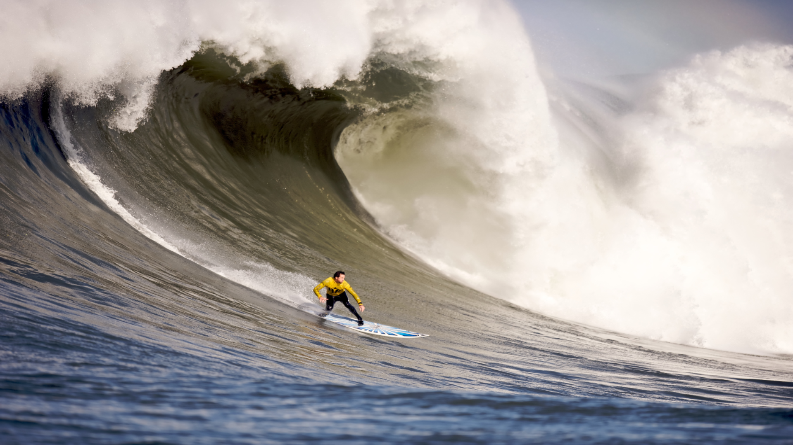

What kind of photos are good to encode using JPEG?
Photos with many colors and details, such as real-life photographs, landscapes, people, and nature scenes, are good to encode using JPEG because JPEG compresses these images efficiently.
What kind of photos are good to encode using GIF?
GIF is good for simple images with few colors, such as logos, icons, simple drawings, and animations.
What is unique about the PNG format?
PNG is unique because it supports transparent backgrounds and uses lossless compression, so the image quality does not decrease when it is compressed.
How do you resize your photo to the size it should be displayed?
You can resize a photo using an image editing program by changing its width and height to the size you want it to be displayed.
Why should you resize photos using photo editing software instead of resizing it using CSS?
You should resize photos using photo editing software because it reduces the file size and helps the webpage load faster. CSS only changes how large the image looks, but the original large file is still downloaded.
